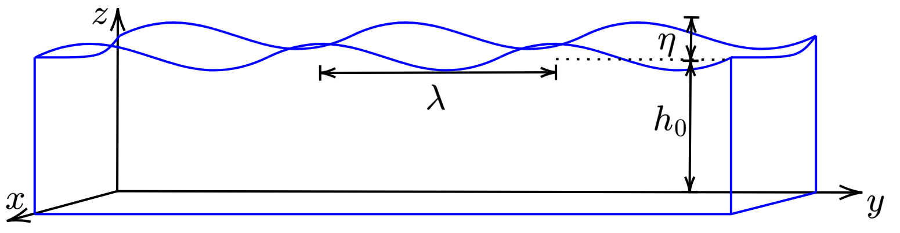

For an arbitrary transverse motion of the string, the associated kinetic energy density is, by definition, \begin{align}\label{eq:string:kinetic} T = \tfrac{1}{2}\rho_0 (\partial \xi/\partial t)^2 . \end{align} To calculate the kinetic energy of the motion of a string of length \(\ell\), Eq. \eqref{eq:string:kinetic} is integrated, i.e., the kinetic energy is \(\tfrac{1}{2}\rho_0 \int_0^\ell (\partial \xi/\partial t)^2 dx\).
Obtaining the potential energy density of the string requires more effort, as will also be the case for shallow water and acoustic waves. Displacing the string by \(\delta \xi\) corresponds to a differential length change of \begin{align}\label{eq:ds} \delta s = \frac{\partial s}{\partial x}dx = \frac{dx}{\cos\theta}\,, \end{align} as can be seen in the figure above. [Partial derivatives are used because \(s = s(x,t)\) and \(\xi = \xi(x,t)\).] Since \(1/\cos\theta = \sqrt{1+ \tan^2\theta}\), and since \(\tan\theta = \partial \xi/\partial x\), Eq. \eqref{eq:ds} becomes \begin{align}\label{eq:ds:2} \delta s = \sqrt{1 + (\partial \xi/\partial x)^2} \, dx \simeq \big[1 + \tfrac{1}{2}(\partial \xi/\partial x)^2\big] dx\,, \end{align} where the approximation neglects terms cubic in \(\partial \xi/\partial x\). Deforming the string from having an original length of \(\ell\) to a new length \(\ell + \delta s\) amounts to a total length change of \begin{align}\label{eq:length} \int_0^\ell \sqrt{1 + (\partial \xi/\partial x)^2} \, dx - \ell \simeq \int_0^\ell \big[1 + \tfrac{1}{2}(\partial \xi/\partial x)^2\big] dx - \ell = \tfrac{1}{2} \int_0^\ell (\partial \xi/\partial x)^2 dx\,. \end{align} The work done in deforming the string equals the force times the displacement. Since \(\mathcal{T}\) is a constant, the work done is simply \(\mathcal{T}\) times Eq. \eqref{eq:length}: \begin{align}\label{eq:W} W = \tfrac{1}{2} \mathcal{T} \int_0^\ell (\partial \xi/\partial x)^2 dx\,. \end{align} The quantity \begin{equation}\label{eq:string:potential} U = \tfrac{1}{2} \mathcal{T} (\partial \xi/\partial x)^2 \end{equation} is identified to be the potential energy density of the string. {See p. 101 of Ref. [3] for a discussion on the limitations of this interpretation.}
From Eqs. \eqref{eq:string:kinetic} and \eqref{eq:string:potential}, the Lagrangian is \begin{align}\label{eq:string:L} L = T-U = \tfrac{1}{2}\rho_0 (\partial \xi/\partial t)^2 - \tfrac{1}{2} \mathcal{T} (\partial \xi/\partial x)^2. \end{align}
The following derivation is mostly based on what is presented in Ref. [3]. Hamilton's principle is stated explicitly in these notes through the variation of the parameter \(\alpha\), while the principle is discussed qualitatively in Ref. [3].
For convenience, the partial derivatives of \(\xi\) with respect to \(x\) and \(t\) are denoted by subscripts, i.e., \(\xi_x = \partial \xi/\partial x\) and \(\xi_t = \partial \xi/\partial t\). Thus Eq. \eqref{eq:string:L} becomes \begin{align}\label{eq:string:L:1} L = L[\xi(x,t), \xi_x(x,t),\xi_t(x,t),x,t] = \tfrac{1}{2}\rho_0 \xi_t^2 - \tfrac{1}{2} \mathcal{T} \xi_x^2. \end{align} Begin by forming a functional \(J\) of the independent variables \(x\) and \(t\): \begin{align}\label{eq:string:J} J = \int_{t_1}^{t_2}\int_{x_1}^{x_2} L[\xi(x,t), \xi_x(x,t),\xi_t(x,t),x,t] dx\,dt \,. \end{align} According to the least-action principle, nature behaves in a way such that \(\xi(x,t)\) extremizes the functional \(J\). To determine the \(\xi(x,t)\) that extremizes \(J\), consider a function of \(x\) and \(t\) that is a neighbor to \(\xi(x,t)\), \begin{align}\label{eq:string:neighbor} \xi(\alpha,x,t) = \xi(0,x,t) + \alpha\zeta(x,t)\,, \end{align} where \(\zeta(x,t)\) is continuous and vanishes at \(x_1\), \(x_2\), \(t_1\) and \(t_2\), i.e., \begin{align}\label{eq:zeta:end} \zeta(x_1,t) = \zeta(x_2,t) = \zeta(x,t_1)= \zeta(x,t_2)=0\,, \end{align} so that \(\xi(\alpha,x,t)\) shares the endpoints of \(\xi(x,t)\). Inserting the neighboring function given by Eq. \eqref{eq:string:neighbor} into Eq. \eqref{eq:string:J} yields \begin{align}\label{eq:string:J:alpha} J(\alpha) = \int_{t_1}^{t_2}\int_{x_1}^{x_2} L[\xi(x,t,\alpha), \xi_x(x,t,\alpha),\xi_t(x,t,\alpha),x,t] dx\,dt \,. \end{align} The functional \(J\) is now extremized with respect to the paramater \(\alpha\): \begin{align} \frac{\partial J}{\partial \alpha}\bigg\rvert_{\alpha=0} = 0\,. \end{align} The partial derivative of Eq. \eqref{eq:string:J:alpha} with respect to \(\alpha\) is set to zero, \begin{align} \frac{\partial J}{\partial \alpha}\bigg\rvert_{\alpha = 0} &= \left\{\frac{\partial}{\partial \alpha}\int_{t_1}^{t_2}\int_{x_1}^{x_2} L[\xi(x,t,\alpha), \xi_x(x,t,\alpha),\xi_t(x,t,\alpha),x,t] dx\,dt\right\}\bigg\rvert_{\alpha = 0} \notag\\ &= \int_{t_1}^{t_2}\int_{x_1}^{x_2} \left[ \frac{\partial L}{\partial \xi} \left(\frac{\partial \xi}{\partial \alpha}\right)\bigg\rvert_{\alpha = 0} + \frac{\partial L}{\partial \xi_x} \left(\frac{\partial \xi_x}{\partial \alpha}\right)\bigg\rvert_{\alpha = 0} + \frac{\partial L}{\partial \xi_t} \left(\frac{\partial \xi_t}{\partial \alpha}\right)\bigg\rvert_{\alpha = 0} \right] dx\,dt = 0\,,\label{eq:string:J:alpha:1} \end{align} where the chain rule has been used to arrive at the second line. Since from Eq. \eqref{eq:string:neighbor} \begin{align*} \frac{\partial \xi}{\partial \alpha} = \zeta(x,t)\,,\quad \frac{\partial \xi_x}{\partial \alpha} = \frac{\partial \zeta}{\partial x}\,,\quad \frac{\partial \xi_t}{\partial \alpha} = \frac{\partial \zeta}{\partial t}\,, \end{align*} Eq. \eqref{eq:string:J:alpha:1} becomes \begin{align}\label{eq:string:J:alpha:2} \int_{t_1}^{t_2}\int_{x_1}^{x_2} \left( \frac{\partial L}{\partial \xi} \zeta + \frac{\partial L}{\partial \xi_x} \frac{\partial \zeta}{\partial x} + \frac{\partial L}{\partial \xi_t} \frac{\partial \zeta}{\partial t} \right) dx\,dt &= 0\,. \end{align} The integral over \(x\) of the second term of Eq. \eqref{eq:string:J:alpha:2} is integrated by parts, i.e., \(\int u\, dv = uv- \int v\, du\). Setting \(u = \partial L/\partial \xi_x\) and \(dv = d\zeta\) yields \begin{align}\label{eq:string:parts:1} \int_{x_1}^{x_2} \frac{\partial L}{\partial \xi_x} \frac{\partial \zeta}{\partial x}dx = \frac{\partial L}{\partial \xi_x} \zeta(x,t)\bigg\rvert_{x_1}^{x_2} - \int_{x_1}^{x_2} \frac{\partial}{\partial x}\bigg(\frac{\partial L}{\partial \xi_x}\bigg)\zeta(x,t) dx \,. \end{align} The first term on the right-hand side of Eq. \eqref{eq:string:parts:1} vanishes because \(\zeta(x_1,t) = \zeta(x_2,t) = 0\) [see Eq. \eqref{eq:zeta:end}]. Equation \eqref{eq:string:parts:1} thus reduces to \begin{equation}\label{eq:string:parts:1:1} \int_{x_1}^{x_2} \frac{\partial L}{\partial \xi_x} \frac{\partial \zeta}{\partial x}dx = - \int_{x_1}^{x_2} \frac{\partial}{\partial x}\bigg(\frac{\partial L}{\partial \xi_x}\bigg)\zeta(x,t)\, dx \end{equation} Similarly, the integral over \(t\) of the third term of Eq. \eqref{eq:string:J:alpha:2} is integrated by parts by setting \(u = \partial L/\partial \xi_t\) and \(dv = d\zeta\): \begin{align}\label{eq:string:parts:2} \int_{t_1}^{t_2} \frac{\partial L}{\partial \xi_t} \frac{\partial \zeta}{\partial t}dt = \frac{\partial L}{\partial \xi_t} \zeta(x,t)\bigg\rvert_{t_1}^{t_2} - \int_{t_1}^{t_2} \frac{\partial}{\partial t}\bigg(\frac{\partial L}{\partial \xi_t}\bigg)\zeta(x,t)\, dt\,. \end{align} The first term on the right-hand side of Eq. \eqref{eq:string:parts:2} vanishes because \(\zeta(x,t_1) = \zeta(x,t_2) = 0\). Equation \eqref{eq:string:parts:2} thus reduces to \begin{equation}\label{eq:string:parts:2:1} \int_{t_1}^{t_2} \frac{\partial L}{\partial \xi_t} \frac{\partial \zeta}{\partial t}dt = - \int_{t_1}^{t_2} \frac{\partial}{\partial t}\bigg(\frac{\partial L}{\partial \xi_t}\bigg)\zeta(x,t)\, dt \end{equation} In terms of Eqs. \eqref{eq:string:parts:1:1} and \eqref{eq:string:parts:2:1}, Eq. \eqref{eq:string:J:alpha:2} becomes \begin{align}\label{eq:string:J:alpha:3} \int_{t_1}^{t_2}\int_{x_1}^{x_2} \left[ \frac{\partial L}{\partial \xi} - \frac{\partial}{\partial x}\bigg(\frac{\partial L}{\partial \xi_x}\bigg) - \frac{\partial}{\partial t}\bigg(\frac{\partial L}{\partial \xi_t}\bigg) \right] \zeta(x,t) \, dx\, dt &= 0\,. \end{align} Since the points \(x_1\) and \(x_2\) can be brought as close together as desired (and similarly for \(t_1\) and \(t_2\)), the integrand of Eq. \eqref{eq:string:J:alpha:3} must vanishes for the equality to be satisfied, i.e., \begin{align}\label{eq:string:EL} \frac{\partial L}{\partial \xi} - \frac{\partial}{\partial x}\bigg(\frac{\partial L}{\partial \xi_x}\bigg) - \frac{\partial}{\partial t}\bigg(\frac{\partial L}{\partial \xi_t}\bigg) = 0\,. \end{align}
The wave equation is obtained by inserting Eq. \eqref{eq:string:L:1} into Eq. \eqref{eq:string:EL}. Since the Lagrangian does not depend explicitly on \(\xi\) (i.e., \(\partial L/\partial \xi = 0\)), and since \[\frac{\partial}{\partial x}\left(\frac{\partial L}{\partial \xi_x}\right) = \mathcal{T}\frac{\partial}{\partial x} \left(\frac{\partial \xi}{\partial x}\right) = \mathcal{T}\frac{\partial^2 \xi}{\partial x^2}\] and \[\frac{\partial}{\partial t}\left(\frac{\partial L}{\partial \xi_t}\right) = \rho_0 \frac{\partial}{\partial t}\left(\frac{\partial \xi}{\partial t}\right) = \rho_0\frac{\partial^2 \xi}{\partial t^2}\] Eq. \eqref{eq:string:EL} reduces to \(\mathcal{T} \partial^2\xi/\partial x^2 - \rho_0\partial^2\xi/\partial t^2 = 0\), or, upon identifying \(c_0^2 = \mathcal{T}/\rho_0\), \begin{align} \frac{\partial^2 \xi}{\partial x^2} - \frac{1}{c_0^2}\frac{\partial^2\xi}{\partial t^2} =0 \,. \end{align}
Consider surface water waves in which the height of the water equals \begin{align}\label{eq:h} h(\vec{r},t) = h_0 + \eta(\vec{r},t)\,. \end{align} where \(h_0\) is the depth as measured from the surface at rest to the bottom, and where \(\eta\) is the wave variable, as shown below.
The position vector \(\vec{r}\) is represented by two coordinates in the plane perpendicular to the direction of the displacement, which is identified as the \(z\) direction, e.g., \(\vec{r} = x\vec{e}_x + y\vec{e}_y\), where \(\vec{e}_x\) and \(\vec{e}_y\) are the Cartesian rectangular unit vectors. The \(z\) axis is zero at the bottom, and \(z = h_0\) at the surface at rest. Two assumptions are now made:
The kinetic energy density is, by definition, \begin{align}\label{eq:water:T} T = \tfrac{1}{2}\rho_0 v^2\,, \end{align} where \(v^2 = \vec{v}\cdot\vec{v}\), while the potential energy is obtained from the gravitational potential energy density the water in a fluid column: \begin{align} U &= \frac{1}{\Delta x \Delta y h_0} \int_{0}^{\eta} \rho_0 g z \Delta x\Delta y \,dz \notag\\ &=\frac{\rho_0 g}{h_0} \int_{0}^{\eta} z \,dz\,.\label{eq:water:U:1} \end{align} Evaluating Eq. \eqref{eq:water:U:1} yields the potential energy density \begin{align}\label{eq:water:U} U = \tfrac{1}{2} \frac{\rho_0 g}{h_0} \eta^2\,. \end{align} A Lagrangian density is formed by subtracting Eq. \eqref{eq:water:U} from Eq. \eqref{eq:water:T}, \begin{align}\label{eq:water:L} L = T-U = \tfrac{1}{2}\rho_0 v^2 - \tfrac{1}{2} \frac{\rho_0 g}{h_0} \eta^2. \end{align}
In order to use Hamilton's principle, the Lagrangian must be expressed in terms of a single function, i.e., \(\eta\) and \(\vec{v}\) should be written in terms of a common variable. The appropriate variable (taking inspiration from acoustics) is the velocity potential \(\psi\), defined by \begin{align}\label{eq:psi} \vec{v} = -\nablav \psi\,. \end{align} It is noted that \(\psi\) has units of length squared per unit time, and that the introduction of Eq. \eqref{eq:psi} implies that \(\nablav \times \vec{v} = 0\).
To relate \(\eta\) to \(\psi\), the linearized momentum conservation equation \(g\nablav \eta + \partial \vec{v}/\partial t = 0\) must be introduced [2]. Thus, up to the addition of a constant, \begin{align}\label{eq:psi:v} \eta = \frac{1}{g}\frac{\partial \psi}{\partial t}\,. \end{align} In terms of Eqs. \eqref{eq:psi} and \eqref{eq:psi:v}, the kinetic and potential energies become \(T = \tfrac{1}{2}\rho_0 (\nablav \psi)^2\) and \(U = \tfrac{1}{2}(\rho_0/gh_0)(\partial\psi/\partial t)^2\), respectively. The Lagrangian is therefore \begin{align}\label{eq:water:L:1} L &= L[\psi(x,y,t), \psi_x(x,y,t), \psi_y(x,y,t), \psi_t(x,y,t), x,y, t] \\ &= \tfrac{1}{2}\rho_0[({\partial\psi}/{\partial x})^2 + ({\partial\psi}/{\partial y})^2] - \tfrac{1}{2}\frac{\rho_0}{gh_0}({\partial\psi}/{\partial t})^2\,. \end{align}
A functional \(J\) is formed of the independent variables \(x\), \(y\), and \(t\): \begin{align}\label{eq:water:J} J = \int_{t_1}^{t_2}\int_{y_1}^{y_2}\int_{x_1}^{x_2} L[\psi(x,y,t), \psi_x(x,y,t), \psi_y(x,y,t),\psi_t(x,y,t),x,y,t] dx\,dy\,dt \,. \end{align} To find the \(\psi\) that extremizes \(J\), consider the neighboring function \begin{align}\label{eq:water:neighbor} \psi(\alpha,x,y,t) = \psi(0,x,y,t) + \alpha\zeta(x,y,t)\,, \end{align} where \(\zeta(x,y,t)\) vanishes at the endpoints \(x_1\), \(x_2\), \(y_1\), \(y_2\), \(t_1\), and \(t_2\). Inserting Eq. \eqref{eq:water:neighbor} into Eq. \eqref{eq:water:J} yields \begin{align}\label{eq:wave:J:alpha} J(\alpha) = \int_{t_1}^{t_2}\int_{y_1}^{y_2}\int_{x_1}^{x_2} L[\psi(x,y,t,\alpha), \psi_x(x,y,t,\alpha), \psi_y(x,y,t,\alpha),\psi_t(x,y,t,\alpha),x,y,t] dx\,dy\,dt \,. \end{align} Extremizing Eq. \eqref{eq:wave:J:alpha} with respect to \(\alpha\) yields \begin{align} \frac{\partial J}{\partial \alpha}\bigg\rvert_{\alpha = 0} &= \left\{\frac{\partial}{\partial \alpha}\int_{t_1}^{t_2}\int_{y_1}^{y_2}\int_{x_1}^{x_2} L[\psi(x,y,t,\alpha), \psi_x(x,y,t,\alpha), \psi_y(x,y,t,\alpha),\psi_t(x,y,t,\alpha),x,y,t] dx\,dy\,dt\right\}\bigg\rvert_{\alpha = 0} \notag\\ &= \int_{t_1}^{t_2}\int_{y_1}^{y_2}\int_{x_1}^{x_2} \left[ \frac{\partial L}{\partial \psi} \left(\frac{\partial \psi}{\partial \alpha}\right)\bigg\rvert_{\alpha = 0} + \frac{\partial L}{\partial \psi_x} \left(\frac{\partial \psi_x}{\partial \alpha}\right)\bigg\rvert_{\alpha = 0} + \frac{\partial L}{\partial \psi_y} \left(\frac{\partial \psi_y}{\partial \alpha}\right)\bigg\rvert_{\alpha = 0} + \frac{\partial L}{\partial \psi_t} \left(\frac{\partial \psi_t}{\partial \alpha}\right)\bigg\rvert_{\alpha = 0} \right] dx\,dy\,dt = 0\,,\label{eq:water:J:alpha:1} \end{align} where the chain rule has been used to arrive at the second line. Since from Eq. \eqref{eq:water:neighbor} \begin{align*} \frac{\partial \psi}{\partial \alpha} = \zeta(x,y,t)\,,\quad \frac{\partial \psi_x}{\partial \alpha} = \frac{\partial \zeta}{\partial x}\,,\quad \frac{\partial \psi_y}{\partial \alpha} = \frac{\partial \zeta}{\partial y}\,,\quad \frac{\partial \psi_t}{\partial \alpha} = \frac{\partial \zeta}{\partial t}\,, \end{align*} Eq. \eqref{eq:water:J:alpha:1} becomes \begin{align}\label{eq:water:J:alpha:2} \int_{t_1}^{t_2}\int_{y_1}^{y_2}\int_{x_1}^{x_2} \left( \frac{\partial L}{\partial \psi} \zeta + \frac{\partial L}{\partial \psi_x} \frac{\partial \zeta}{\partial x} + \frac{\partial L}{\partial \psi_y} \frac{\partial \zeta}{\partial y} + \frac{\partial L}{\partial \psi_t} \frac{\partial \zeta}{\partial t} \right) dx\,dy\,dt &= 0\,. \end{align} The integral over \(t\) of the last term of Eq. \eqref{eq:water:J:alpha:2} is integrated by parts: \begin{align}\label{eq:water:parts:3} \int_{t_1}^{t_2} \frac{\partial L}{\partial \psi_t} \frac{\partial \zeta}{\partial t}dt = \frac{\partial L}{\partial \psi_t} \zeta(x,t)\bigg\rvert_{t_1}^{t_2} - \int_{t_1}^{t_2} \frac{\partial}{\partial t}\bigg(\frac{\partial L}{\partial \psi_t}\bigg)\zeta(x,t)\, dt\,. \end{align} The first term on the right-hand side vanishes because \(\zeta(x,y,t_1) = \zeta(x,y,t_2) = 0\). Equation \eqref{eq:water:parts:3} thus reduces to \begin{align}\label{eq:water:parts:3:1} \int_{t_1}^{t_2} \frac{\partial L}{\partial \psi_t} \frac{\partial \zeta}{\partial t}dt = - \int_{t_1}^{t_2} \frac{\partial}{\partial t}\bigg(\frac{\partial L}{\partial \psi_t}\bigg)\zeta(x,t)\, dt\,. \end{align} Similarly, the third term of Eq. \eqref{eq:water:J:alpha:2} becomes \begin{align}\label{eq:water:parts:1} \int_{y_1}^{y_2} \frac{\partial L}{\partial \psi_y} \frac{\partial \zeta}{\partial y}dy = - \int_{y_1}^{y_2} \frac{\partial}{\partial y}\bigg(\frac{\partial L}{\partial \psi_y}\bigg)\zeta(x,t)\, dy\,. \end{align} and the second term of Eq. \eqref{eq:water:J:alpha:2} becomes \begin{align}\label{eq:water:parts:2} \int_{x_1}^{x_2} \frac{\partial L}{\partial \psi_x} \frac{\partial \zeta}{\partial x}dx = - \int_{x_1}^{x_2} \frac{\partial}{\partial x}\bigg(\frac{\partial L}{\partial \psi_x}\bigg)\zeta(x,t)\, dx\,. \end{align} In terms of Eqs. \eqref{eq:water:parts:3:1}–\eqref{eq:water:parts:2}, Eq. \eqref{eq:water:J:alpha:2} becomes \begin{align}\label{eq:water:J:alpha:final} \int_{t_1}^{t_2}\int_{y_1}^{y_2}\int_{x_1}^{x_2} \left[ \frac{\partial L}{\partial \psi} - \frac{\partial}{\partial x}\bigg(\frac{\partial L}{\partial \psi_x}\bigg) - \frac{\partial}{\partial y}\bigg(\frac{\partial L}{\partial \psi_y}\bigg) - \frac{\partial}{\partial t}\bigg(\frac{\partial L}{\partial \psi_t}\bigg) \right] \zeta\, dx\,dy\,dt &= 0\,. \end{align} Since the endpoints of the integrals can be brought arbitrarily close together, the equality is satisfied only when the integrand vanishes, i.e., \begin{align}\label{eq:water:J:alpha:final:integrand} \frac{\partial L}{\partial \psi} - \frac{\partial}{\partial x}\bigg(\frac{\partial L}{\partial \psi_x}\bigg) - \frac{\partial}{\partial y}\bigg(\frac{\partial L}{\partial \psi_y}\bigg) - \frac{\partial}{\partial t}\bigg(\frac{\partial L}{\partial \psi_t}\bigg) = 0 \end{align}

For another perspective on describing wave motion using the calculus of variations, see these notes on ray theory.